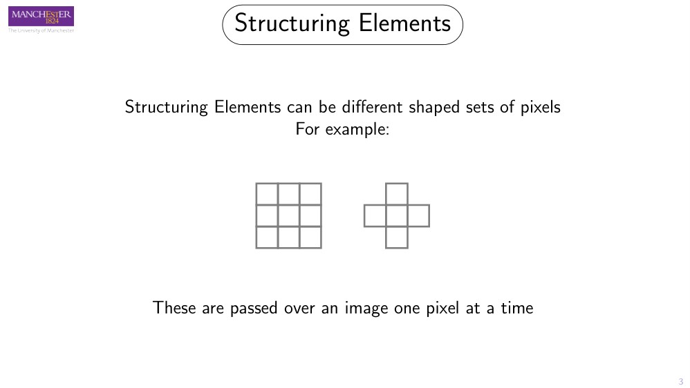
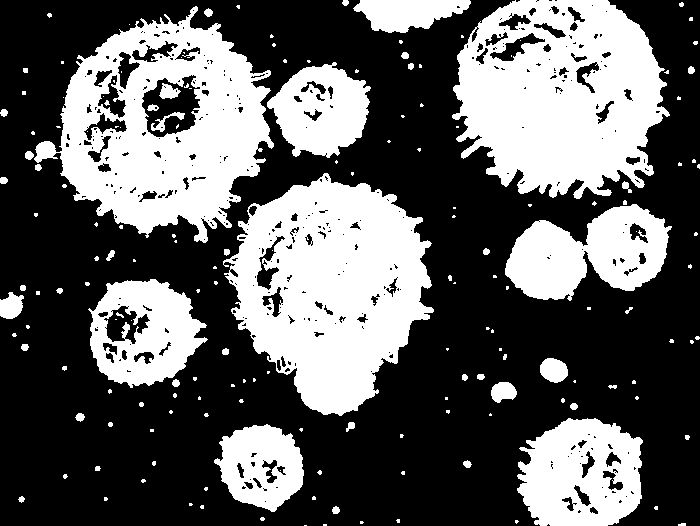
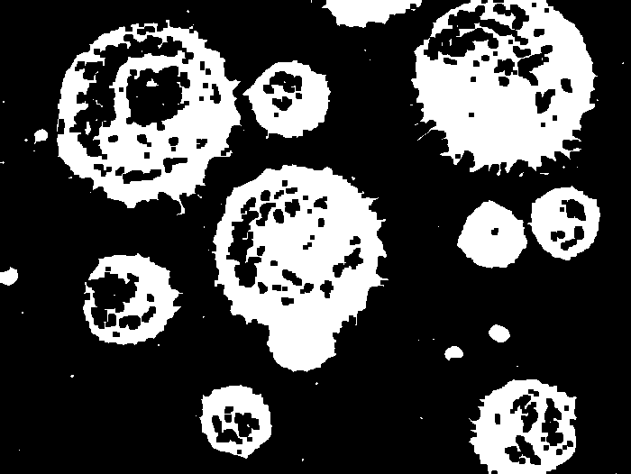
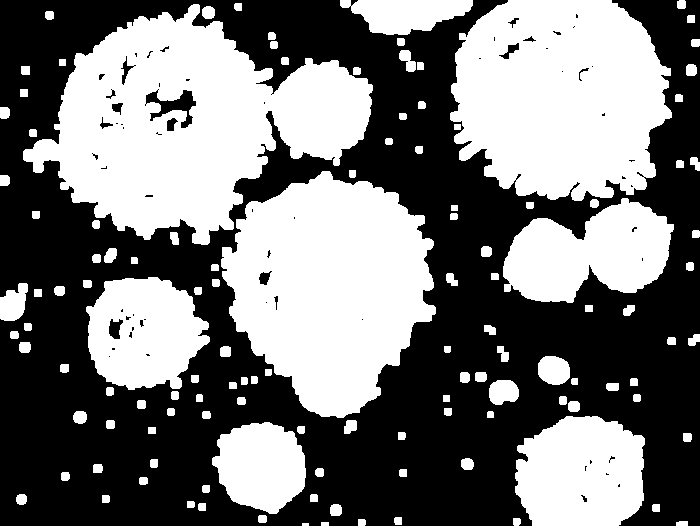
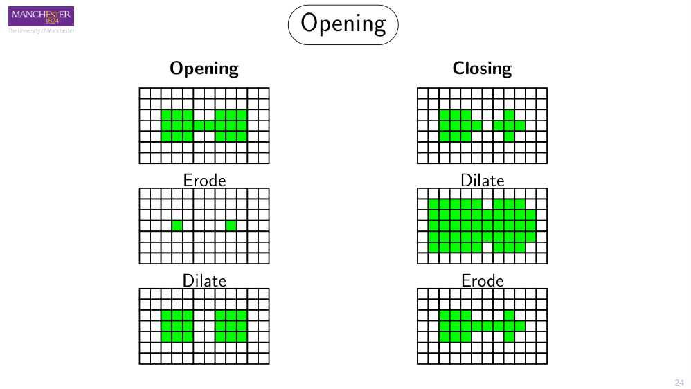

How four simple operations — erosion, dilation, opening and closing — reshape the blobs in a thresholded image: filling holes, erasing noise, and joining or splitting objects, all by sliding a tiny template across the pixels.
4core operations
1structuring element
2ideas: fit & hit
0/1every pixel
// the problem
Thresholding is messy
When you threshold a greyscale image into a binary one, the result is rarely clean. Objects come out with ragged edges, tiny holes punched through them, spurs sticking out, and stray noise specks scattered across the background.
The lecture's running example is a tadpole. After thresholding, one tadpole has two little eye-holes where the eyes were, and its tail has broken up into a string of disconnected blobs instead of one continuous line.
Morphology gives us the tools to repair this: fill the eyes, reconnect the tail — or, if we prefer, erode the tail away completely. Same toolkit, different intent.
Mental model
Throughout, the object (foreground) is drawn in green and has value 1; the background is white and has value 0.
OriginalThresholded → binary
Drag the handle. The thresholded result (right) is riddled with holes, ragged edges and noise specks — the raw material morphology cleans up.// the tool
Structuring elements
A structuring element (SE) is a small template of pixels that you slide across the image one pixel at a time — much like the kernel in convolution. Its shape and size decide exactly how an operation behaves.

From the slides — a 3×3 square and a cross-shaped SE
Common shapes
Squares — e.g. 3×3 or 5×5 blocks
Crosses (plus-shaped)
Circles / discs, and really any shape and size
The SE has an origin, usually its centre — this is the pixel whose value gets written in the output. SEs almost always have odd dimensions so the centre is well-defined.
Two key ideas: fit and hit
Tim's handout frames every operation around two relationships between the SE and the image underneath it:
Fit
The SE fits at a location if every SE pixel (every 1 in the template) lands on an object pixel. Erosion keeps a pixel only where the SE fits.
Hit
The SE hits at a location if any SE pixel lands on an object pixel. Dilation sets a pixel wherever the SE hits.
// operation 1
Erosion — eats the object
Erosion shrinks objects, eats away spurs, and enlarges holes.
Rule. Place the SE centre on every pixel. If the centre is over an object pixel and any other SE element is over a background pixel, the centre pixel becomes background in the output.
Equivalently: a pixel survives only where the SE fits entirely inside the object.
Critical detail
The result must be drawn into a new image — you cannot edit in place, or pixels you've just changed would corrupt the calculation for their neighbours. (This shows up directly as an exam question.)
What it does, visually
The object loses a layer of border pixels all the way round — it shrinks.
Any holes inside the object get larger.
Small noise specks and thin spurs can disappear entirely — but only if the SE is large enough relative to them.


ThresholdedEroded · 5×5 SE
White blood cells — drag the handle. Noise mostly gone; holes opened up; outlines thinned.// operation 2
Dilation — grows the object
Dilation is the converse of erosion: it adds pixels, so objects grow and gaps fill.
Rule. Place the SE centre on every pixel. If the centre is over a background pixel and any other SE element is over an object pixel, the centre pixel becomes object in the output.
Equivalently: a pixel is set wherever the SE hits the object. (And again — write to a new image.)
What it does, visually
A border of pixels is added all the way around the object — it grows.
Small holes and gaps get filled in (big holes survive a small SE).
Two nearby objects can merge into one.

ThresholdedDilated · 5×5 SE
The same cells — holes filled, objects fatter, specks grown.
The catch: both change the object's size. Often we want the cleaning effect without the size change — which is exactly what opening and closing deliver.
// operations 3 & 4
Opening & Closing
Chain erosion and dilation together and the size change cancels out — leaving only the cleanup.
Erode first (kill the small stuff), then dilate to restore the survivors to size. What erosion deleted can't reappear.
Closing
Fills holes & fills out spurs and joins near objects — keeping object size.
close(I) = erode(dilate(I))
Dilate first (fill the gaps), then erode back to size. Filled holes stay filled.
The tadpole, finally
To close the eye-holes: dilate fills them, then erode shrinks the body back — but there's no longer any background inside the eyes to re-open. Same-size tadpole, no eyes. That's a closing.

Worked example from the slides. Opening (left) breaks the thin bridge → two separate objects. Closing (right) keeps the bridge → one merged object.
Draw on the left grid, pick an operation and a structuring element, then watch the SE sweep across and write the result into the new image on the right.
Interactive engine
Click or drag on the input grid to toggle pixels. Then Step through, or Play the full sweep.
Op
SE
Preset
Input image
Output image (new buffer)
Ready. Erode with a 3×3 square — press Play.
Watch for
With Open and Close the output is computed in two passes (the status line tells you which). Try the 2 blobs preset: Open snaps the bridge; Close keeps it.
// further reading · Tim's handout ch.4
Beyond binary
The handout pushes past the lecture into greyscale morphology and the structural features it unlocks — a taste of more advanced material.
Greyscale morphology
The SE is no longer binary — it can hold integer values. Picture the image as a landscape where intensity is height:
Greyscale erosion — slide the SE beneath the surface and raise it as far as it goes without poking through; the height is the output. Darkens, removes bright peaks.
Greyscale dilation — lower an inverted SE from above until it touches; record its height. Brightens, fills dark dips.
Useful combinations
Smoothing — open then close removes both bright and dark extrema.
Morphological gradient — (opened − closed); an orientation-insensitive edge measure.
Top-hat transform — (original − opened); pulls out detail hidden by uneven shading.
Measuring shape
Granulometry — open/close with growing SEs to recover a particle size distribution.
Distance transform — repeatedly erode; a pixel's iteration count is its distance to background. Used to find e.g. the centre of a palm.
Skeleton — a minimal one-pixel-wide representation of an object's shape; convex hull — minimal enclosing shape.
Recommended
Tim's IP handout, Chapter 4, pp. 65–86 (~88 min) goes deeper on all of the above, with the formal set-theoretic definitions of erosion (f ⊖ s) and dilation (f ⊕ s).
// check yourself
Quiz
From the course's own visual quiz bank. Pick an answer to see if you're right — and why.
// past papers & exam practice
Exam practice
In the published COMP27112 papers, the morphology questions sit in the restricted Section A (MCQ), which isn't released — so the closest genuine past-paper item is the binary-image boundary question below, followed by exam-style practice built around this chapter. Reveal each model answer once you've attempted it.
Genuine · COMP27112 2025 · Q27a [5 marks]
Binary boundary marking. A figure shows an object in a binary image. Boundary pixels are being labelled as object (O) or background (B); the process has been started (e.g. B₀, O₀, O₁, B₁, O₂…). Explain how the process of marking boundary pixels is performed, with reference to the already-labelled pixels.
Model answer
Trace the object's outline by examining each pixel's neighbours. A pixel is a boundary (object) pixel if it is an object pixel (=1) that has at least one background neighbour; interior object pixels (all neighbours =1) are not boundary. Starting from a known boundary pixel, move around the contour visiting connected object pixels, labelling each as O and the adjacent background transitions as B, until you return to the start. This is exactly the set of pixels erosion would remove — so boundary = original − erode(original) (handout Fig 4.11), tying the question back to morphology.
Exam-style practice · 1 [4 marks]
Define erosion and dilation of a binary image in terms of a structuring element. State the effect of each on (i) object size, (ii) holes, and (iii) noise.
Model answerErosion: set the centre pixel to background if the SE centre is over an object pixel and any other SE element overlies background (the SE must fit). → object shrinks, holes enlarge, small noise/spurs removed if the SE is big enough. Dilation: set the centre pixel to object if the centre is over background and any other SE element overlies an object pixel (the SE hits). → object grows, holes shrink/fill, nearby objects may merge. Both write to a new output image.
Exam-style practice · 2 [4 marks]
Define opening and closing using erosion and dilation. An image has small bright noise specks and small holes inside its objects. Which operation removes the specks, and which fills the holes — each without changing overall object size? Justify.
Model answer
open(I) = dilate(erode(I)); close(I) = erode(dilate(I)). Opening removes the specks: the initial erosion deletes the small specks/spurs, then dilation restores the surviving objects to their original size (deleted specks can't return). Closing fills the holes: dilation fills the small holes, then erosion shrinks objects back to size while the filled holes stay filled. Because each pairs an op with its inverse, overall object size is preserved.
Exam-style practice · 3 [5 marks]
A thresholded image of a tadpole has two eye-holes and a tail broken into separate blobs. Using morphology, describe how to (a) fill the eyes and reconnect the tail, and (b) alternatively remove the tail entirely.
Model answer(a) Apply closing: dilation fills the eye-holes and bridges the gaps between the tail fragments (reconnecting the tail), then erosion returns the body to its original size while filled regions remain filled. (b) Apply erosion (or an opening) with an SE larger than the thin tail fragments — the narrow, broken tail is too thin to survive and is eroded away, leaving just the body.
Exam-style practice · 4 [2 marks]
Why must the output of erosion and dilation be written into a new image rather than modified in place?
Model answer
Each output pixel depends on the original neighbourhood values. If you wrote results back into the same image, already-updated pixels would feed into the calculation of their neighbours, corrupting the result — exactly as with convolution. A separate output buffer keeps every computation based on the unmodified input.
Exam-style practice · 5 [3 marks]
(From the handout.) Define what it means for a structuring element to fit and to hit an image at a location, and relate each to erosion and dilation.
Model answer
The SE fits at a location if every SE "1" pixel overlies an object pixel (background under SE "0"s is irrelevant). The SE hits if any SE "1" pixel overlies an object pixel. Erosion outputs object only where the SE fits; dilation outputs object wherever the SE hits.